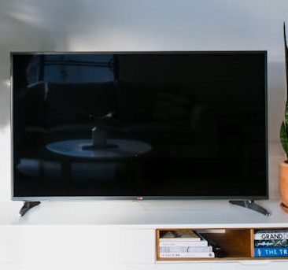

At Kitty Classic Electronics, we understand that choosing the right TV is a personal decision. That's why our knowledgeable staff is always on hand to provide expert advice and assistance, ensuring that you find the perfect television to suit your needs and budget. Whether you're upgrading your home entertainment system or searching for the perfect gift, we've got you covered.

We also pride ourselves on offering an extensive range of televisions that cater to every need and preference. From sleek and modern designs to timeless classics, our collection has something for everyone.